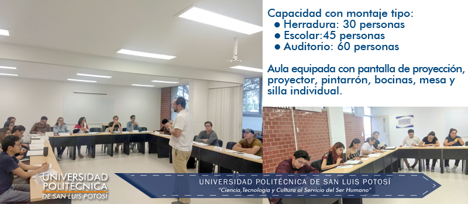
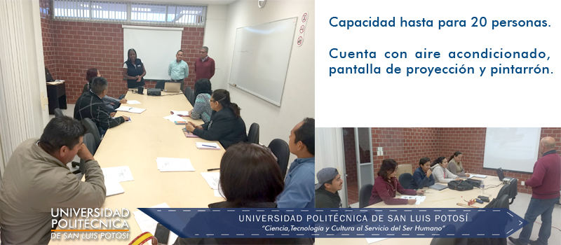

Extensión Universitaria
Misión
El área de Extensión Universitaria de la UPSLP está comprometida con la formación y el desarrollo del capital humano de las organizaciones que conforman los diferentes sectores productivos del estado y la región. Para ello, diseña y promueve cursos de actualización y/o capacitación pertinentes a las necesidades del entorno industrial y comercial de San Luis Potosí, lo anterior, bajo un enfoque de servicio al cliente y altos estándares de calidad, que sobrepasen las expectativas de nuestros clientes.
Visión
Ser reconocida como la mejor opción en programas de formación y actualización de capital humano en las áreas de especialidad de la UPSLP, en términos de la relación entre calidad, servicio e inversión para nuestros clientes en San Luís Potosí y la región.
Objetivo
El objetivo del área de Extensión Universitaria es promover la creación de redes de colaboración con los diferentes sectores productivos de San Luis Potosí, para con ello fortalecer el capital humano e intelectual que impulse el desarrollo de proyectos y servicios empresariales consistentes en transferencia de conocimiento.
Modalidades de Capacitación
Cursos Abiertos
Son cursos de actualización y/o capacitación que el área de Extensión Universitaria ofrece al público en general.
Cursos Cerrados (In-Company)
Son cursos de capacitación a organizaciones del sector público o privado que requieran actualización y/o entrenamiento bajo un esquema personalizado. Estos cursos se pueden llevar a cabo en las instalaciones de la UPSLP o en otra sede, a solicitud del cliente.
Centro de Negocios Internacionales
En el Centro de Negocios Internacionales se tienen las siguientes salas:
- Sala de Juntas

- Aula Ejecutiva de Capacitación
- Sala de Toma de Decisiones

- Cámara de Gesell
Empresas Participantes en Cursos de Capacitación
- BMW SLP, S.A. de C.V.
- BorgWarner Componentes PDS, S. de R.L. de C.V.
- TBC de México, S.A. de C.V.
- Logistics Insight Corporation, S. de R.L. de C.V.
- Secretaría de Educación de Gobierno del Estado de San Luis Potosí
- JD Norman de San Luis Potosí, S. de R.L. de C.V.
- RAM S.A. de C.V.
- Ecosintex, S.A. de C.V.
- Constructora Tres Naciones, S.A. de C.V.
- Purificadora Brisa, S.A. de C.V.
- Cervecería Cuauhtémoc Moctezuma, S.A. de C.V.
- Go Global, S. de R.L. de C.V.
- Trabajo Total Integrado, S.A. de C.V.
- Instituto Temazcalli Prevención y Rehabilitación